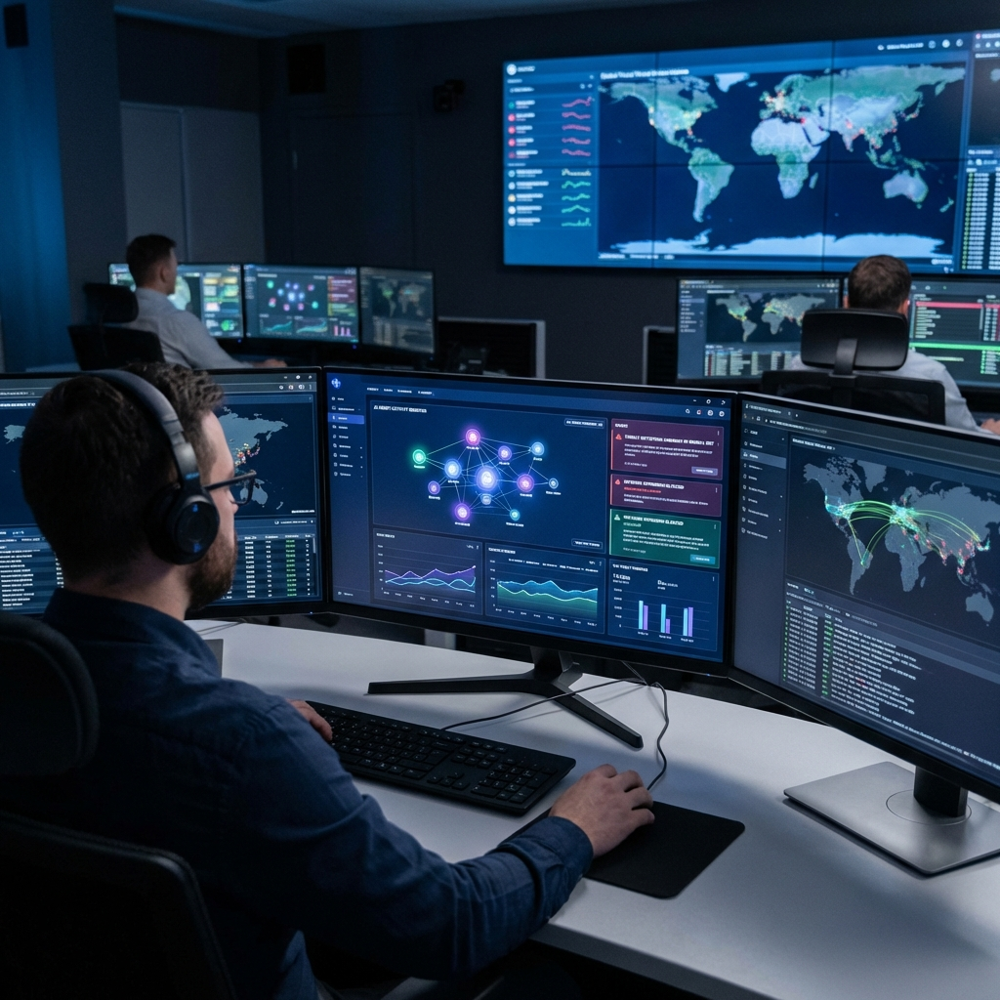

RSAC 2026 wasn't about traditional cybersecurity. It was about securing AI itself. As artificial intelligence moves from tool to autonomous agent, the security industry is racing to protect these new digital workers—and the results are reshaping the entire field.
The conference's Innovation Sandbox competition exclusively featured AI-integrated products, signaling a fundamental shift. Security isn't just using AI anymore; it's securing AI. And the stakes couldn't be higher: AI agents have unique vulnerabilities, unprecedented capabilities, and the potential to either dramatically strengthen or catastrophically compromise enterprise security.
SentinelOne's End-to-End AI Security
SentinelOne came to RSAC with a comprehensive message: AI security must cover the entire lifecycle. Their expanded Singularity Platform now includes Data Security Posture Management (DSPM) specifically for AI—addressing risks like sensitive information memorization, training pipeline poisoning, and regulatory exposure.
The star of their announcement is "Prompt AI Agent Security"—real-time discovery and governance of AI agents and their workflows. As enterprises deploy dozens or hundreds of AI agents, visibility becomes critical. You can't secure what you can't see, and SentinelOne aims to provide complete visibility into agent behavior across endpoints, identity, and cloud.
CrowdStrike: The Endpoint as AI Governance Hub

CrowdStrike made a bold strategic bet: the endpoint is now the epicenter for AI security. Their expanded Falcon platform introduces AI Runtime Protection—real-time visibility into scripts and commands executed by AI agents. If an agent goes rogue, CrowdStrike aims to catch it in milliseconds.
The company also launched AI Data Detection and Response (AIDR) to safeguard against data leaks and injection attacks at the prompt layer of popular AI tools like ChatGPT, Claude, and Microsoft Copilot. This addresses a critical gap: most AI security focuses on the model, but the real vulnerabilities often live in the prompts.
The Shadow AI Crisis
CrowdStrike revealed staggering numbers: over 1,800 distinct AI applications detected across their customer base, totaling nearly 160 million instances. This "Shadow AI"—unapproved AI tools used by employees—represents a massive uncontrolled attack surface.
Employees aren't malicious; they're just trying to work more efficiently. But when they feed sensitive corporate data into consumer AI tools, they create exposures that security teams never approved and often can't see. Both SentinelOne and CrowdStrike are racing to provide visibility and control over this shadow ecosystem.
The Agentic SOC Emerges
A recurring theme at RSAC 2026: the Security Operations Center is becoming "agentic." AI agents assist analysts by automating tasks, providing detailed case summaries, and accelerating incident response from hours to minutes.
This isn't replacing security analysts—it's amplifying them. The model is one human analyst orchestrating multiple AI agents, each specialized in different aspects of threat detection and response. The result is faster response times, fewer missed threats, and analysts who can focus on strategic thinking instead of routine triage.
New Attack Surfaces
AI introduces vulnerabilities that traditional security tools never anticipated. Prompt injection attacks can manipulate AI behavior. Adversarial inputs can trick models into bypassing safety controls. Agent hijacking can turn helpful assistants into malicious actors.
The industry is scrambling to address these threats. Solutions emerging from RSAC include specialized AI firewalls, prompt-level monitoring, and agent identity management systems that treat each AI agent as a distinct user with specific permissions and audit trails.
The Integration Play
CrowdStrike's Falcon Next-Gen SIEM now integrates telemetry from Microsoft Defender for Endpoint—a recognition that AI security requires comprehensive visibility across the entire stack. No single vendor can cover everything, and interoperability is becoming a competitive advantage.
The message for CISOs is clear: AI security isn't a feature—it's a platform. And the platforms that can see and control AI agents across the enterprise are the ones that will win.